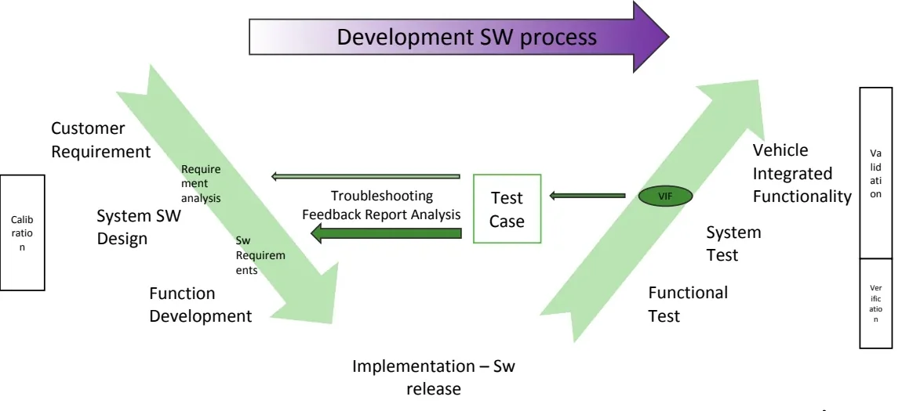
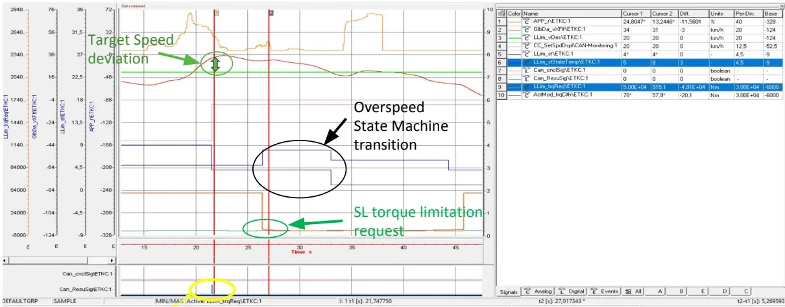
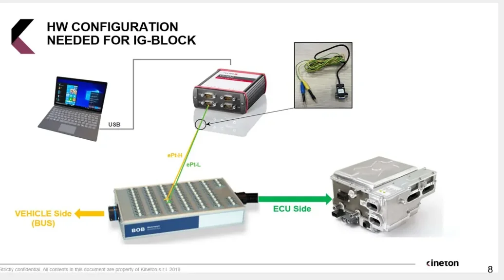

Vehicle Validation¶
Validation answers a simple question: does the software we built behave the way the original concept said it should? Verification checks that the code was written correctly against its design; validation checks that the implemented control logic, running on the real system, actually produces the response the requirements promised.
This article covers Vehicle Integrated Functionality (VIF) validation — the final, highest-fidelity test stage, performed on a real vehicle — and then walks through the practical side of working on a prototype car: connecting to its networks, flashing and diagnosing ECUs, and injecting faults safely.
Why validate in a vehicle?¶
By the time a function reaches vehicle validation, it has already been exercised in simulated environments (MiL, SiL, HiL). The vehicle adds something none of those can fully reproduce:
- Real dynamics and disturbances. The controlled system answers a stimulus with all its physical complexity — friction, inertia, thermal behavior, tolerances — none of which a model captures perfectly.
- Real interactions between ECUs. On the bench, non-involved nodes are simulated or absent; in the car, every ECU is live and interacting.
- Proof of the simulation itself. A successful vehicle test confirms that the results obtained in the simulated environment were trustworthy.
The price you pay is controllability. In a HiL rig you can force any input to any value at any moment. In a vehicle, sensors are real physical entities, so to reach a specific system state you must perform an actual maneuver — for example, if a function only activates with a warm engine, you have to drive the car until the coolant reaches temperature. Designing maneuvers that reliably push the system into the required state is a core skill of the validator.
Where validation sits in the V-model¶

Vehicle validation is the last step of the software development V-cycle: it closes the right-hand branch after functional test and system test. The workflow is driven by documentation coming from the left-hand branch:
- Requirements and functional specifications are translated into test cases (CheckList / DVP — Design Validation Plan).
- The validator executes the maneuvers in the vehicle, measures and analyzes the system behavior.
- Results go into a report that is fed back to the development teams (function developers, calibrators, suppliers), closing the loop with bug-fix suggestions and software modifications — this is the troubleshooting feedback path in the diagram.
- When the result is positive, the software content is frozen together with its calibration set.
flowchart TD
A["Start-up: flash latest SW,<br/>update nodes to production intent,<br/>collect documentation"] --> B["Function analysis:<br/>study SW manual & spec requirements"]
B --> C["Test case preparation<br/>(CheckList / DVP)"]
C --> D["In-vehicle test execution<br/>with I/O monitoring"]
D --> E{"Result OK?"}
E -->|Yes| F["SW content freezing<br/>+ calibration set collection"]
E -->|No| G["Report compiling + DVPM point<br/>(confirmed by project supervisor)"]
G --> H["Issue state monitoring<br/>until fix is released"]
H --> DThe validation documentation set¶
Stellantis validation activities revolve around a standard document set:
| Document | Role |
|---|---|
| VF (Vehicle Function) | Requirement description for a single application/function |
| CFTS (Component Functional Technical Specification) | Functional characteristics (e.g. speed limiter minimum set point) and the functional structure of the controls, valid per architecture |
| PTMS | Specifications of the vehicle interface functions for the engine control system; high-level description of the main ECM functionalities and their interaction |
| CheckList | The output test document: a list of maneuvers, each with the expected (or explicitly negated) system behavior, derived from the requirements |
| General Report | Collects all test results and procedure notes |
| DVPM (Design Validation Plan & Results) | Tracks NOK points and anomalies to be fixed; a macro computes the progress state of the whole activity |
The CheckList layout maps directly onto requirements: each row identifies the functionality, the specific feature under test, the condition (the maneuver to perform) and the verification (the expected system behavior, quoting the requirement). A checklist is usually unique per architecture — all projects on the same architecture support the same features, which are then enabled, disabled or calibrated per application.
From requirement to test case¶
The translation from spec to maneuver must preserve the requirement's intent while being executable in the real environment. Example: the requirement says the thermostatic coolant valve must stay closed during the first phase of engine warm-up, and the ECM must command opening once the coolant temperature approaches the target idling temperature. The corresponding test case:
Turn on the engine and wait until the coolant temperature is regulated between 80 °C and 90 °C (depending on the engine's thermal characteristics). Check that the sensed valve position stays fully closed for 10 seconds after engine start, and that it is partially/fully opened once the temperature has been regulated.
Tip
The variables named in the requirement do not necessarily match the labels you read in the measurement tool (INCA). Part of the function analysis is mapping requirement entities to the real SW labels before you go testing.
Worked example: ECM Speed Limiter validation¶
The function¶
The speed limiter caps vehicle speed at a driver-selected threshold. On the PowerNet architecture (Jeep Wrangler) it involves three ECUs: SCCM (steering column control, reads the driver commands), IPC (instrument cluster, displays the setpoint) and ECM, which does the real work — this is why it is called whole ECM speed limiter: the ECM computes the speed setpoint from the steering-wheel buttons and, in coordination with ESP, actuates the torque limitation that tracks it.
The software structure¶
The control is a wrappered function with two main blocks:
- SLCM (Stellantis implementation) — elaborates the target speed requested by the driver through the steering commands (e.g. SL On → Set+ → Res).
- Llim (Bosch implementation) — actuates the speed control, built from three
subfunctions:
- Llim_Stm — the status machine: recognizes the operational driving condition from monitored inputs and outputs the control state.
- Llim_CalcLim — computes the output control torque from the state.
- Llim_ShOff — handles shut-off/inhibition of the control under the conditions defined by the status machine.
flowchart LR
DRV["Driver buttons<br/>(CAN commands)"] --> SLCM["SLCM<br/>target speed"]
SLCM --> subgraph LLIM["Llim (Bosch)"]
STM["Llim_Stm<br/>status machine"] --> CALC["Llim_CalcLim<br/>torque computation"]
SHOFF["Llim_ShOff<br/>inhibition"] --> STM
end
CALC --> TRQ["SL torque reduction request"]The overspeed test¶
The overspeed state is entered when the vehicle runs faster than the setpoint with the limiter engaged, for longer than a defined time. The requirement regulates how the system must react; the checklist condenses it into a maneuver that forces the overspeed (condition) plus the compliant reaction to check (verification).
During execution you monitor, as I/O of the function under test:
- the relevant sensed values — vehicle speed and the internal timer/speed thresholds that gate the state transition (threshold values are INCA calibration data),
- the system reaction — the state machine evolution and the resulting torque limitation request.

In the measurement above you can read the whole story: the driver's SL activation command, the vehicle speed deviating above the target, the state machine transition into the overspeed state once the timer expires, and the SL torque limitation request that brings the speed back. If all of this matches the spec, the test is OK and goes into the report; otherwise it is a NOK.
A real NOK: interaction with Start & Stop¶
Some of the most valuable tests target the interaction between functions. In this case the scenario was the speed limiter's behavior after a Start & Stop re-crank. The measurement showed the requirement being violated: after the autostop maneuver, the SL was wrongly turned off — the limitation setpoint collapsed to 0 km/h.
Root cause: the SL internal model was mishandling a state machine transition during the re-crank. Because the fault lives inside the state machine logic with no calibration involved, this is a software bug (hardcoded behavior), not something a calibrator can fix by changing data.
Troubleshooting and issue tracking¶
Every NOK result enters a formal loop:
flowchart TD
A["NOK test result report<br/>+ root cause detection"] --> B["DVPM point opening"]
B --> C["Issue classification<br/>(SW bug / calibration)"]
C --> D["SW or Cal fixing content released"]
D --> E{"Fix re-test OK?"}
E -->|Yes| F["Point closed"]
E -->|No| AKey rules of the loop:
- A DVPM point is opened only when the negative behavior is confirmed by the project supervisor.
- The DVPM document (with an embedded macro) keeps the trace of NOK tests and anomalies, giving the global progress state of the activity.
- Distinguishing SW issue from calibration issue matters: a calibration problem is fixed with new data; a SW bug requires a code change and a new release, then a full re-test of the function.
Why the vehicle still wins: the cam-backup story¶
The crankshaft tone wheel backup strategy is a good example of a test whose significance changes with the environment. Engine position is essential — injection control, variable valve actuation, gear management and fuel pressure all descend from it. The requirement (engine speed calculation) says, in essence:
- RPM is computed from crank sensor tooth periods; once the crank position is locked and two top-dead-center positions have been traversed, it is computed from the two TDCs.
- If the crank sensor fails but the cam sensor is still valid, engine speed must
be computed — and reported on CAN in
ECM_A1.EngRPM— from the camshaft signal instead (up to 8160 RPM, ramped to 0 when the active sensor unlocks).
The backup logic: if teeth are systematically missing, the ECM waits 7 crankshaft revolutions (counted via the camshaft signal, since crank and cam positions are strictly related) before declaring the crank source faulty — the debounce time is calibratable — then applies the cam-backup strategy and sets a diagnostic fault. If the speed computed from the camshaft is above a fixed threshold (e.g. 500 RPM), the ECM pilots injection to hold idle; below it, the engine is shut down.
Testing this means performing a crankshaft loss-of-signal in idle conditions. The result differed sharply by environment:
| Environment | Successful idle recoveries |
|---|---|
| HiL | 8 out of 10 |
| Vehicle | about 5 out of 10 |
The gap comes from real engine physics — friction losses, mechanical inertia — that the model did not reproduce reliably. The lesson: test significance depends on the environment, and some behaviors can only be judged in the vehicle.
Appendix: calibration, ETK and CCP/XCP
- Calibration is what lets one software application run on different engine/vehicle variants (e.g. a 1.6 L 120 hp manual and a 2.0 L 180 hp automatic on the same ECU hardware): the control logic is common, the data tunes it to the application.
- ETK (Emulator-Tastkopf, emulator test probe) is the ETAS development interface fitted in development ECUs. It connects in parallel to the processor bus lines and can replace program and/or calibration data, allowing online parameter changes; its dual-port RAM streams measured internal values to tools like INCA.
- CCP/XCP (CAN Calibration Protocol / eXtended Calibration Protocol) provide runtime read/write access to ECU variables and memory through standard interfaces instead of an ETK: CCP over CAN; XCP also over FlexRay, Ethernet or USB (and supports flashing).
Hands-on: in-vehicle validation on a BEV prototype (Maserati M182)¶
This section is the practical playbook used on the M182 BEV prototype. The main actors on the high-voltage side: the EDM (Electric Drive Machine = motor + inverter, 400 V / up to 1 kA), OBCM (on-board charger), EVSE (supply equipment), ECH/BCH (coolant heaters), plus the control modules SGW (secure gateway), VDCM (vehicle domain control module), BPCM (battery pack control module), MCPA/MCPB (front/rear motor control processors), IPC and CADM.
Getting oriented in the car¶
- The 12 V battery sits in the front hood. Its negative-pole cable has a button that releases it without tools — handy because disconnecting the 12 V is a routine step.
- OBD sockets — driver side, lower left: the FD-CAN6 socket (the diagnostic CAN, the one service also uses) and next to it the FD-CAN11 socket. Passenger side: three more sockets carrying FD-CAN 5, 14 and 3. Every cable carries a label with its connection info — always work from those labels.
- Trick: you can close the "door closed" switch by hand to keep the door open without the acoustic warning.
After a 12 V reconnect
Two things bite you if you forget them: - After detaching/reattaching the 12 V battery you must press the door-open button on the key, otherwise the vehicle will not go into charge. - The vehicle must be re-proxied (proxi alignment, see below) or several functions misbehave.
Wiring the CAN case¶
The cable labels follow the scheme FDx: location pins connector (channel on CAN
case) — for example FD3: Psngr LH 2-10 ept (channel 2 on CAN case) means:
passenger side, cable marked "LH", use the breakout lead ("briglia") identified
as 2-10, land it on CAN case channel 2. Each breakout must go to its own CAN or
nothing is read. The standard channel mapping:
| CAN case channel | Bus |
|---|---|
| 1 | LIN (reserved) |
| 2 | FD-CAN 3 |
| 3 | FD-CAN 6 |
| 4 | FD-CAN 11 |
FD-CAN 5 and 14 are used in specific cases only; to sniff them use any free
channel except channel 1. The pin numbers in the labels (e.g. Driver 6-14)
refer to the OBD output pins, which are in continuity with pins 2 and 7 of the
DB-9 connector that plugs into the CAN case. Termination: the 120 Ω resistor
is needed on the vehicle side only, not on the VDCM side.
Monitoring with CANalyzer¶
- Load a pre-built configuration (File → last used). For the M182 activity: configuration 3 monitors the CANs; configurations 1 and 2 are the gateway setups (FD-CAN3 and FD-CAN 11+5) that contain the CAPL code used to modify signals on those buses.
- Load the DBCs into the channels (database management) before starting.
- Start the measurement — with logging (click the square icon next to the "Trace Complete" folder, then Start) or Start without logging for live viewing only. To sniff in the vehicle you must be Online.
- At start, the channel mapping window appears: the upper section lists the application channels (with their DBCs), the Hardware section lists the physical CAN case channels. Align them, click deactivate unmapped, then OK — the trace now shows decoded traffic.
- To acquire all the buses you need two CAN cases: connect the first, wait until it appears in the application channel mapping, then connect the second.
Practical habits from the field:
- If a CAN does not go to sleep, the first message to check is the NM (network management) message — it tells you which ECU is requesting to stay awake.
- Always keep the contactor status signal on screen: before disconnecting the HV battery, do key-off, watch the contactors open in CANalyzer, then disconnect.
- Watch the 12 V battery voltage signal: it must never drop below 11.5 V, or the battery is dying and must be charged. During a flash the 12 V is not being recharged — if it dies mid-flash it is as if the battery had been disconnected, so verify its charge first.
- Right-click → Create Common Axis groups several signals into one named graphic section.
Flashing and diagnostics with CDA¶
- Software flashing goes through the FD-CAN6 (diagnostic CAN) with the CDA tool. CANalyzer must be in Stop while CDA is active.
- In CDA: vehicle mode → vehicle, select the channel (e.g. channel 3 for CAN 6) and tick the FD-CAN entry, pick model year and vehicle, then unlock the ECU. From CDA you can read DTCs from all ECUs (Vehicle Wide DTCs), not just the VDCM.
- Proxi alignment (needed after a 12 V reconnect) — two methods:
- Vehicle alignment in CDA: tick the required items, press the green arrow, do a key cycle, then refresh.
- Manual: read the proxi code from the BCM with the PID editor
(read command
22 20 24), copy the returned string (starting from byte30; the62prefix =22 + 40is just the positive response), and write it to the VDCM (write command2E 20 23).
- Quick check that the vehicle is proxied: switch drive mode from Normal to Sport and see if the car lowers (in Offroad it must raise).
Safety: the two mushrooms and the HVIL¶
The prototype carries two safety mushroom buttons:
- Red mushroom (normally up) — commands zero torque. Push it only when there is an unintended acceleration.
- Yellow mushroom (normally down) — part of the HVIL (High Voltage Interlock Loop). Raising it opens the loop.
The HVIL is a wire that loops in and out of every high-voltage connector. If any contact is lost, VDCM and BPCM open the contactors and discharge the HV bus: VDCM first ramps the current down, then BPCM commands the opening — this order protects the contactors from burning under high current.
Fault injection with the BOB¶

The BOB (breakout box) replicates the VDCM pinout and sits between the vehicle harness and the ECU — each pin has two posts: one toward the vehicle, one toward the VDCM. (On this project only side K/B matters.) To tell which post is which, disconnect the BOB from the vehicle-side cable and check continuity between the BOB pin and the corresponding pin on the cable.
With the BOB you can create the classic faults, using the wiring harness pin
list (e.g. FD11 (B72, B88) = CAN-high on B72, CAN-low on B88; the second
parenthesized pair is just a duplicate and can be ignored):
- Open circuit — simply remove one of the two pins.
- Short to ground — bridge the pin (e.g. B72) to a vehicle ground pin (B2, B4 or B6).
- Short to battery — first make an open, then apply battery voltage (pin B1) to the ECU-side post only.
Short-to-battery discipline
Always inject the short to battery on the ECU side. Doing it on the vehicle side would apply battery voltage to sensors and actuators designed for a lower supply and can damage them. Use a cable with an inline fuse for these shorts.
Inserting a gateway¶
"Doing a gateway" means modifying signals on the fly between the vehicle and the VDCM using CAPL in CANalyzer. You need the CAN case and two breakout leads (one vehicle side, one VDCM side) with three output pins for CAN/LIN:
- Vehicle-side lead: pin 7 → CAN-high, pin 2 → CAN-low (for LIN: pins 7 and 3), e.g. onto B72/B88 vehicle side. This branch goes to the CAN case with a 120 Ω termination in parallel — the CAN case has no internal termination, and the vehicle branch is no longer closed by the ECU.
- VDCM-side lead: pin 7 → ECU-side high, pin 2 → ECU-side low, DB-9 to the CAN case without the resistor (the ECU's internal termination closes this branch).
- In CANalyzer, one channel carries all messages received from the VDCM and the other the messages transmitted to it — the ones you modify with CAPL.
Network entry sequence
Because you are physically breaking into the network, you must disconnect the 12 V battery first, then start the gateway (Start in CANalyzer), then reconnect the battery. Only this sequence lets the gateway join the network cleanly.
Power-management note¶
Since the car is a prototype, disconnect the 12 V battery when tests are done. If you leave it connected, the vehicle goes to sleep to protect the battery, and the APM monitors the 12 V state during sleep: if it detects discharge, it wakes up and recharges the 12 V battery from the 400 V HV battery — so with a healthy vehicle, the 12 V battery should never die on its own.
Key takeaways
- Validation checks the implemented SW against the original requirements; VIF validation in the vehicle is the last V-cycle step and the only environment with real dynamics and real ECU interactions.
- Requirements are turned into maneuvers (CheckList/DVP): each test has a condition to realize and a verification to check; results feed the report and, when NOK, a DVPM point and the troubleshooting loop.
- The speed limiter example shows the full chain: requirement → checklist → I/O monitoring of thresholds and state machine → measure analysis → bug found in a state transition (SW bug, not calibration).
- Environment matters: the cam-backup strategy passed 8/10 on HiL but only ~5/10 in the vehicle because of unmodeled physics.
- On the M182 BEV prototype: know your OBD sockets and CAN case channels, never flash with a weak 12 V battery, re-proxy after a battery reconnect, respect the HVIL/mushroom safety logic, and use the BOB for disciplined fault injection (shorts to battery on the ECU side only, fused cable).
Source material¶
This article was distilled from the academy lesson materials:
- :material-file-pdf-box: Validazione BEV — PDF, 3.7 MB
- :material-file-pdf-box: Validazione VF — PDF, 2.5 MB